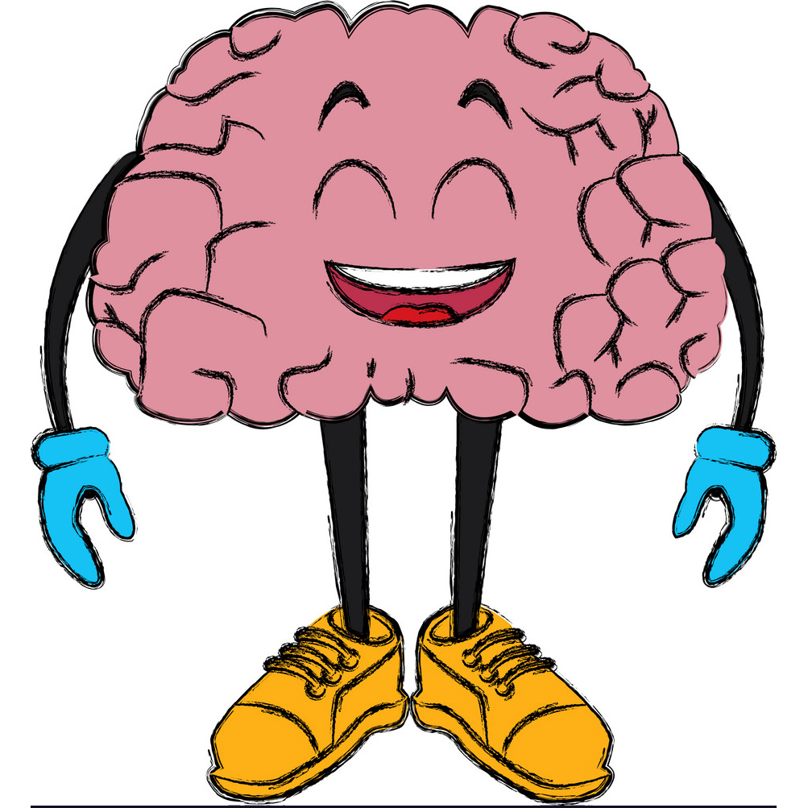

CELLS
Our human body is made up of special building blocks called CELLS. Our bodies are made up of TRILLIONS of cells and these cells have very specific jobs.
- Muscle cells help you move
- Neve cells in the brain help you think
- Red blood cells transport the oxygen we breathe to all the parts of the body that need it
- White blood cells help us to fight illnesses
Most cells are very small. HUNDREDS of cells could fit on the point of a pin.
TISSUES
When many of these special cells work together to perform a specific function it is called a TISSUE (not like the tissue you blow your nose on though)!
There are 4 main kinds of tissues:
- • Muscle tissue
- • Nervous tissue
- Found in the brain and spinal cord (allow communication among other tissue types)
- • Epithelial tissue
- Found in the skin and the airways
- • Connective tissue
- Tendons (connects muscle to bone)
- Ligaments (connect bone to bone)
- and cartilage (helps form joints)
ORGANS
When different tissues work together, an organ is formed such as the heart, liver, lungs, kidneys and even the skin.
Skin is the largest organ in the human body
The skin is composed of three layers: the epidermis, dermis and subcutaneous layer.
- The epidermis is the outer layer of skin. It forms a protective layer between our inner body and the outside world.
- Below the epidermis lies a layer of connective tissue called the dermis. It provides support for the skin, contains blood vessels that nourish skin cells, nerve tissue that provides feeling in the skin, And muscle tissue that is responsible for giving you 'goosebumps' when you get cold or frightened!
- The subcutaneous layer is beneath the dermis and consists mainly of fat that helps cushion the skin and provide protection from cold temperatures.
